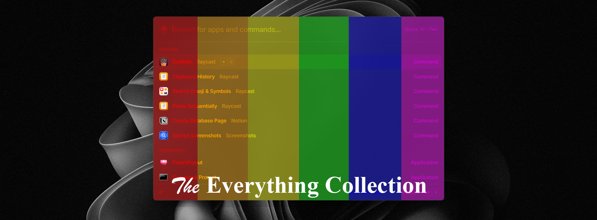
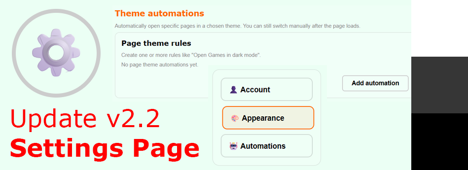
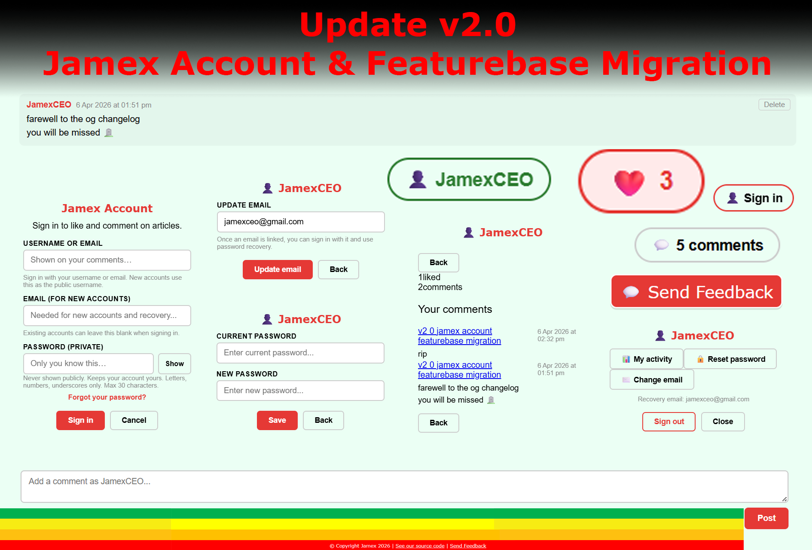
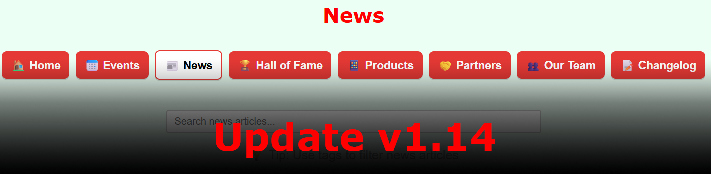

Introducing our latest Thomas & Friends animation: "Thomas and the Sunset"!
This new animation is a step up from our previous one in many ways. For the first time ever, the camera follows Thomas along the track, and rich new sound effects and music really bring the animation to life! We really recommend you watch it and give it a like!
Introducing the Everything Collection for Raycast Themes
28/4/2026
#raycast

We are excited to announce the launch of our new collection of themes for Raycast. Raycast is a productivity tool designed to minimise distractions and enhance focus and workflow. These new themes take this vision and completely disregard it. Every element of your Raycast - text, buttons, background - will be turned into a single colour: choose from red, orange, yellow, green, blue, or purple. Use the buttons below to have Raycast get in your way for once!
On the 25th of April, 2026, Jamex celebrated its 4th birthday. It marked a significant milestone for the company. Below is a recap of the things we have achieved over the past year:
Launched two versions of a website (this one and the old Notion version) and created its own first stable website since the Google Sites version
Took first steps into the animation space (new animation coming out soon!)
Created a collection of Raycast themes (officially launching soon!)
Launched 17 updates for our beloved Jamex Website - all the way from v1.4 to v2.2
Congratulations on a successful year and many wishes for the future!
Jamex Website update 2.2
25/4/2026
#jamexwebsite#update

This update adds options to customise your Jamex Website even further, with the settings page! Easily access your account settings, website background, and event automations all in one place.
Introducing our all-new Discord bot: No as a Service! Inspired by the No-as-a-Service API by hotheadhacker and the No as a Service Raycast extension by Matthew Anderson, this bot allows users to type the command "/no" in the message box and enter a question. Once you send, the bot responds with a creative rejection response. This simple bot can make saying "no" fun!
Head over to the Products page to learn more and quickly add the bot to your server or link it to your account!
Jamex Website Beta Program Launch
11/4/2026
#jamexwebsite
We are proud to announce the public launch of our Jamex Website Beta Program! If you've been active in the Discord recently, you'll know that this has been going on since the 5th, but today it is officially public. They have been helping out immensely with the 2.0 launch, and we will continue to work with users to provide awesome updates and announcements in the coming weeks and months.
Anyone can join by going to the Discord server, navigating to Channels & Roles section, and select the button for Jamex Website Beta testing. You'll be added to #jamex-website-beta, and can help build new features, while enjoying some unofficial, fresh off the oven Jamex Website.
P.S. You may have noticed the new Games section in the navigation bar. This is a new feature we are working on, and joining the Beta program is the perfect opportunity to get early access and help develop this. For now, the button won't work.
Jamex Website update v2.0
9/4/2026
#jamexwebsite#update

This update adds a new Jamex Account, allowing users to log in with a username and password, and react and comment to posts. We have also created a Featurebase board, where you can submit bug reports and feature requests, see progress on requested features, view updates, and more!
To log in, you will be required to create a username and password. The username will be shown on your comments, while your password is kept private and is used to verify the user.
This Changelog page will no longer be updated, and is being transformed into a new Feedback page. Instead, find the new Changelog page on our Featurebase. This will allow for future customisability, easier access, update notifications and better management. To acknowledge the hard work put into this Changelog page, we have implemented the like and comment features here as well. Tell us all about how your favourite update changed the way you used our website. ❤️
This update makes it easier than ever to filter changelog entries. Now, with the brand-new dropdown filter next to the search bar, you can easily select "Major" or "Minor" updates. Not only is this easier than the previous method, but it is also more reliable and does not highlight results that contain the terms "major" or "minor", only highlighting entries with those tags. (Note: the ability to filter by searching "#major" or "#minor" has not been removed for backward compatibility.)
We have launched a new Club in Chess.com! To join, simply click here. Together, Jamex community members will be able to play in tournaments together and connect with other players.
We will launch events and competitions soon.
Jamex Website update v1.16
30/3/2026
#jamexwebsite#update
This update introduces a new "Copy Link" button on each article, allowing users to easily share specific articles with others without having to scroll past more recent ones.
We have enabled the "Home" section on our YouTube channel. Now when you visit it, you will be greeted by a section showcasing our most popular videos. Scroll down to view Videos and Shorts as well!
You can still use the "Videos" and "Shorts" tabs to view all of them in a filtered order, but this new Home section allows viewers to easily discover our best-performing content.
New YouTube Video: "A Thomas Animation - Jamex's First 3D Animation"
27/3/2026
#youtube#video#animation
This small 7-second clip marks the beginning of Jamex's first steps into the 3D Animation space. We hope to share more animations with you soon! You can find this video on our YouTube channel, our website Homepage, or by clicking here.
Jamex Website update v1.14
27/3/2026
#jamexwebsite#update

This update introduces the News page, where you can keep track of updates, new product launches, new videos and announcements, and more, all in one place!